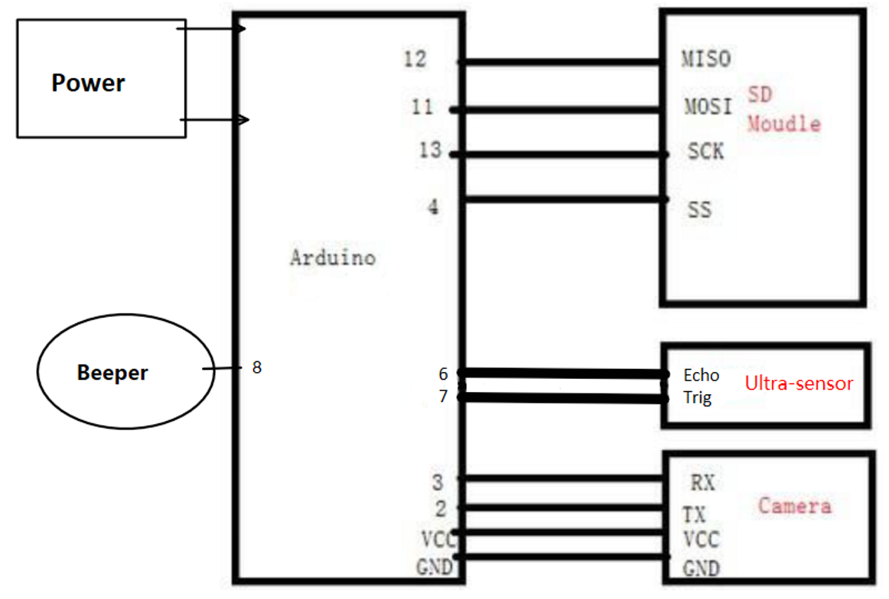
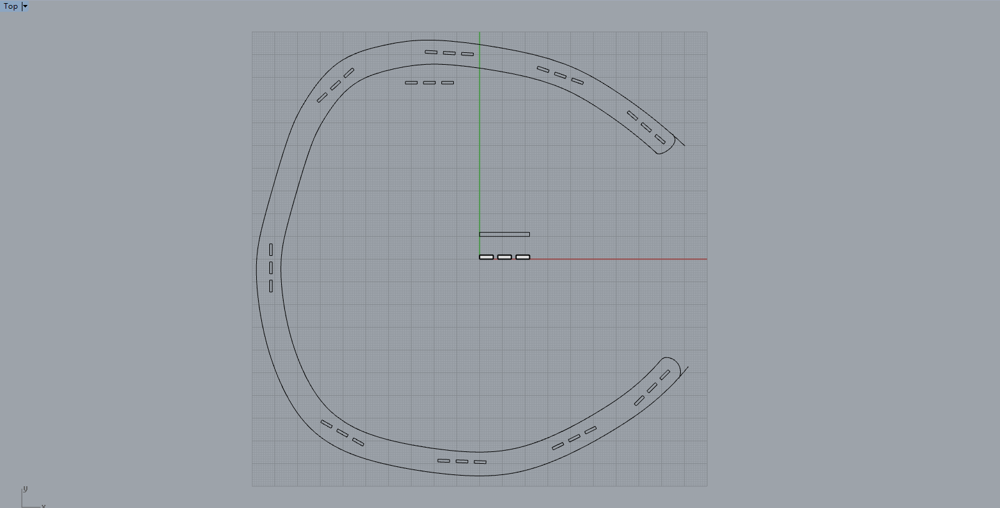
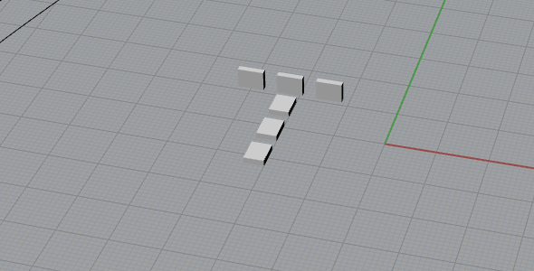
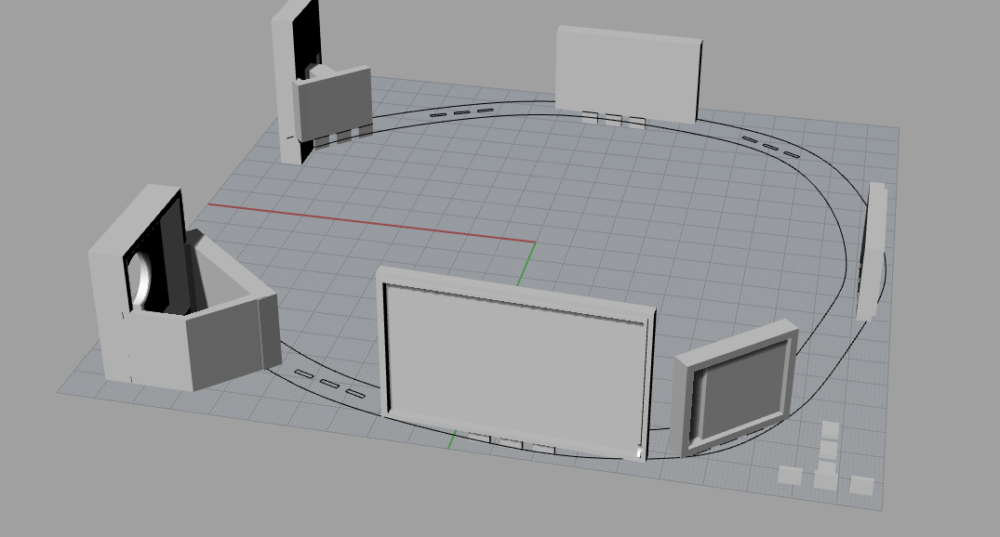

Ingredients:
- arduino mini pro ×1
- camera vcvc0706 (with fifo) ×1
- ultrasonic sensor HC-SR04 ×1
- micro SD card shield ×1
- a beeper with source
- protecting board for li-ion battery ×1
- a fine li-ion battery
- 3D printer ×1
- laser cutter for the head band base.
- Arduino IDE
Connections:
the pins which was connected on the arduino mini pro board is shown below:
try connect the wires but do not solider them.
Programs:
Download these libraries first, and install them in the arduino IDE. By installing, just move the unzipped folder to the Arduino/lib folder where you install your arduino IDE.
Then, download these code for testing the connections and for the final product. By the way, you can download these if you want to test the camera, the sensor and the SD card module seperately. But I won't be sure that these codes work.
Solid part design:
First, desgin the head band base using laser cutter. I use the Rhino for the desgin and expor the .dxf file to the printer. 
I desgin it base on the 3D scan of my head. You can change the scale if you like, but remember not to change the scale of the joints!
Then here is the joints for the 3D print part.
And all the other components are in the following files, which you can download the source file editing by Rhino.
The link is Here. If you are lucky enough to use the xyz printer to print the 3D bases, there is a .stl file to print all the bases together.